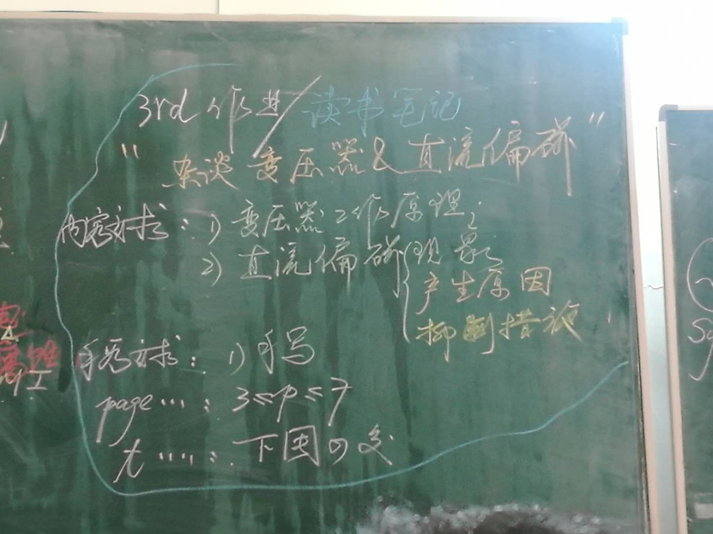
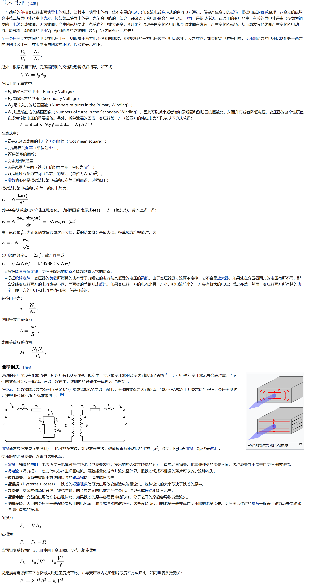

虽然我也很想写CS的内容，但是这学期课有些窒息，得先搞定作业😥
这应该能写满3页A4纸了= =
我怎么还在学电气？？？什么时候才能考390？？？
内容要求

变压器工作原理
wiki

直流偏磁
现象
直流偏磁现象是电力变压器的一种非正常工作状态, 由于某种原因引起变压器绕组中出现直流分量, 进而导致铁心中含有直流磁势或直流磁通, 以及由此引起的一系列电磁效应。变压器在直流偏磁下, 直流磁通和交流励磁磁通相叠加, 形成偏磁时的总磁通, 与直流偏磁方向一致的半个周期铁心饱和程度大大增加, 另外半个周期饱和程度减弱(或不饱和), 励磁电流呈现正负半波不对称的形状。
变压器的这种状态导致一系列影响变压器正常工作的严重后果。
- 增加了变压器的无功损耗;
- 引起保护继电器的误动作;
- 铁心的高度饱和使漏磁增加, 引起金属构件的过热;
- 局部过热使纸绝缘老化并使变压器油分解, 影响变压器的寿命;
- 导致磁致伸缩加剧, 振动和噪声大大增加。
产生原因
- 变压器在交流过励磁下, 铁心磁通密度增加, 励磁电流畸变增加。正常电压ur励磁状态下的铁心磁通密度为Br, 由于铁心励磁特性的非线性, 励磁电流i0(Br)波形稍有畸变。在交流过电压u励磁状态下的铁心磁通密度为B, B>Br, 铁心工作在更加非线性的区域, 励磁电流i0(B)波形的尖峰更加突出, 但正负半波是对称的。
- 变压器在直流偏磁下, 直流和交流励磁磁通相叠加, 形成偏磁时的总磁通密度B(偏磁)。与直流偏磁方向一致的半个周波的磁通密度大大增加, 另外半个周波的磁通密度反而减小, 所对应的励磁电流Ip波形呈现正负半波极不对称的形状。正负半波不对称的励磁电流, 不仅含有奇次谐波还含有偶次谐波。直流偏磁引起半个周波内的铁心过饱和, 导致磁致伸缩加剧, 噪声增加。
- 电网中引起变压器直流偏磁的主要原因有以下两个方面。其一, 太阳等离子风的动态变化与地磁场相互作用产生地磁风暴, 地磁场的变化在地球表面诱发电位梯度, 地表电位梯度在变压器绕组中产生低频感应电流(幅值可达80 ～ 100 A , 频率约在0.001 ～ 1 Hz), 与50 Hz的交流系统比较, 可认为是直流电流。其二, 直流输电系统以大地为返回方式单极运行时, 大地中的直流电流会通过交流变压器的中性点产生直流分量。
抑制措施
目前，抑制直流偏磁主要采取限流和隔直的方法。
中性点注入反向直流电流
向变电站接地网注入一定反向直流电流来降低（或升高）其电位，这样会使通过地网流过中性点接地变压器的直流电流减小，在一定程度上抑制变压器的直流偏磁。限流电抗器用于限制进入直流发生装置的交流电流。中性点注入反向直流电流方法不改变系统参数，对继电保护、自动装置、绝缘配合等不产生影响。负电位补偿时可对地网起阴极保护作用，其缺点也可采取以下措施适当解决：
- 架空避雷线的分流对补偿效率会产生影响， 通过增加补偿设备容量来解决；
- 正电位补偿时会对地网产生轻微腐蚀的问题可以忽略不计；
- 辅助接地极选址不当会加重其他变电站的直流偏磁，通过综合考虑系统网络布置、辅助接地极选址远离其他变电站等方法得到解决。
通过现场应用实例说明由于变电站运行方式的变更，会引起直流电流方向的偏移，存在注入的反向电流不可能随时调整的问题。
中性点串联电阻
流过变压器直流电流的大小取决于直流输电大地回路所造成的中性点接地电位差，以及变压器中性点接地电阻、绕组和连接线路的等效电阻，因此，在中性点接地线上串联限流电阻，可以有效地抑制中性点的直流电流。
对所串联的电阻的耐受电压及热容量具有很高的要求。中性点串联电阻改变了系统结构，继电保护及自动化装置需重新整定，绝缘配合也要作相应校验。
为满足限流的要求，装设的限流电阻阻值应足够大。但是串联大电阻不能保证系统可靠接地， 若在故障时用放电间隙将此电阻旁路，会使系统接地阻抗不连续，使继电保护配置复杂化。
另外，当系统发生故障时，还会导致变压器中性点过电压等一系列问题。
中性点串联电容器
中性点串联电容器是将电容器串入变压器中性点与地之间，隔断直流电流以消除直流对变压器的影响。
文指出所串电容器的电容量较大，价格昂贵、占地面积较大；同时，该方法改变了系统的零序阻抗，继电保护、自动化装置和绝缘配合等方面均需重新校核整定，在大电流冲击下还有爆炸危险，其经济性和实用性方面都有所欠缺。另外，该装置投入运行后，极有可能造成其他变压器中性点的直流电流增大，从而导致其他变压器的直流偏磁。
为了解决上述问题，在电容器两端并联旁路电路，原理图见图5。图中保护间隙用来防止当电容或其他设备有故障时在变压器中性点出现超过其绝缘水平的高过电压。如果主变中性点电容器损坏或电流旁路保护装置发生故障，则可闭合与之并联的旁路刀闸将其旁路，使主变中性点直接接地，然后再打开装置两端的隔离刀闸，使其与系统隔离，即可对电容器或电流旁路保护装置进行维修。
交流输电线串联电容
在变压器绕组出线处串联耦合电容以阻断直流电流。
在一个电压等级的输电线路上装设串联电容并不能限制直流电流通过自耦变压器流到另一电压等级的线路，必须在与交流系统相联的所有出线上均装设串联电容器，才能有效地抑制和消除流过相关变压器中性点的直流电流。
电位补偿法
在变压器中性点与地网之间串接一个电位补偿元件，全额或部分补偿地中电流引起的交流电网各变电站接地网之间的电位差，使交流电网变压器中性点电位相同或相近，有效抑制变压器中性点直流电流。
电位补偿装置由测量、控制、补偿、保护、旁路开关等部分组成，其中由双向可变直流电流源和补偿电阻R组成的电位补偿单元是装置的核心。可以根据大地电流的大小和方向直接手动设定电位补偿度，也可实施闭环控制，由控制单元根据量测单元检测到的变压器中性点直流电流的大小和方向控制双向可变直流电流源的输出，在补偿电阻上产生所需电位补偿度，达到限制主变压器中性点电流的目的。
与中性点注入反向电流法相比， 电位补偿法无需另建辅助接地极（网），不存在辅助接地极入地电流对周边环境的影响，其电流源容量通常小于中性点注入反向电流法。
改善电网中直流电流的分布
在上述方法实际操作中发现，为消除某台变压器的直流偏磁而不得已断开接地，但却使其他变电站的变压器中性点直流电流增大并引起了直流偏磁。所以，在电流超标的变压器中性点安装抑制装置不能从根本上解决该问题。
以全网变压器中性点接地电流小超标为目标，在分析直流网络的基础上提出基于伴随网络的接地电阻优化配置方法。在每次迭代求解过程中，在考虑了接地支路的约束条件下修改灵敏度最高的接地支路接地电阻，直到所有接地支路的中性点电流小于其限值对接地电阻进行优化。该需要对电网内土壤电阻率的分布、电网参数及变电站接地网情况等资料充分掌握，且其数学模型及计算方法均比较复杂。
降低变压器运行工作点
变压器运行于铁心励磁特性曲线上的不同工作点时，其承受直流偏磁电流干扰的能力会受到一定的影响。随着运行工作点的降低，同样幅值的直流偏磁电流所产生的干扰将会有所减弱。
参考资料
- 维基百科
- 直流偏磁对变压器的影响-蒯狄正
- 直流偏磁下变压器励磁电流的实验研究及计算-李慧奇-崔翔-侯永亮-李琳-卢铁兵
- 电力变压器直流偏磁研究综述-苑舜-王天施